מצב רוח — וידאו ארט
עבודת וידאו ארט הבנויה כפסיפס של עשרות פריימים מצילומי הצמחייה בחצר ביתי ברוחות חזקות. הפריימים מצטרפים לתמונת נוף שלמה אך מתעתעת ודינמית, המזמינה בהייה מדיטטיבית הנעה בין קטבי מצב הרוח.
תערוכת גמר (2025) ותערוכת טבע דומם (2024) — תיעוד מחלל התצוגה.
מיצב — Leaving Room. וידאו ארט — ״מצב רוח״.
עבודת וידאו ארט הבנויה כפסיפס של עשרות פריימים מצילומי הצמחייה בחצר ביתי ברוחות חזקות. הפריימים מצטרפים לתמונת נוף שלמה אך מתעתעת ודינמית, המזמינה בהייה מדיטטיבית הנעה בין קטבי מצב הרוח.
תיעוד וידאו של המיצב התלוי בחלל התערוכה.
תיעוד 1
תיעוד 2
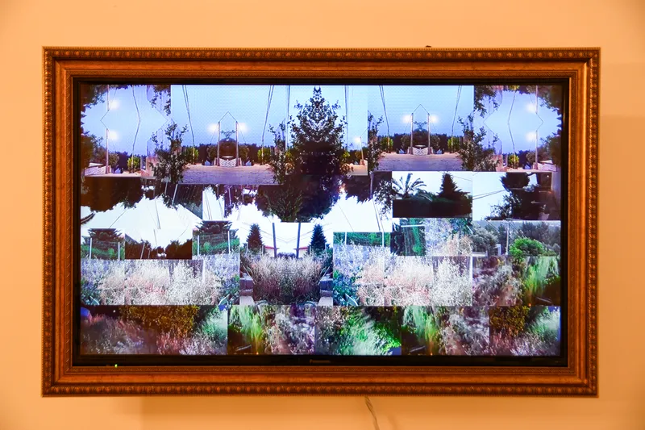
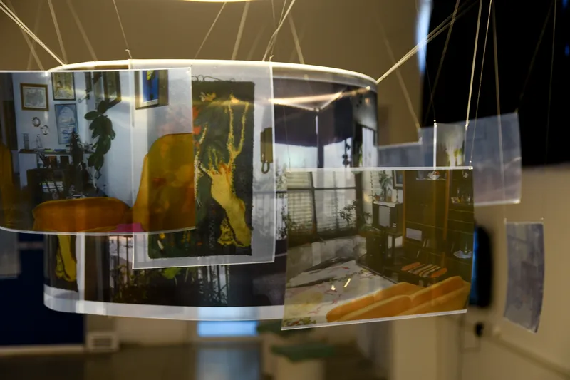
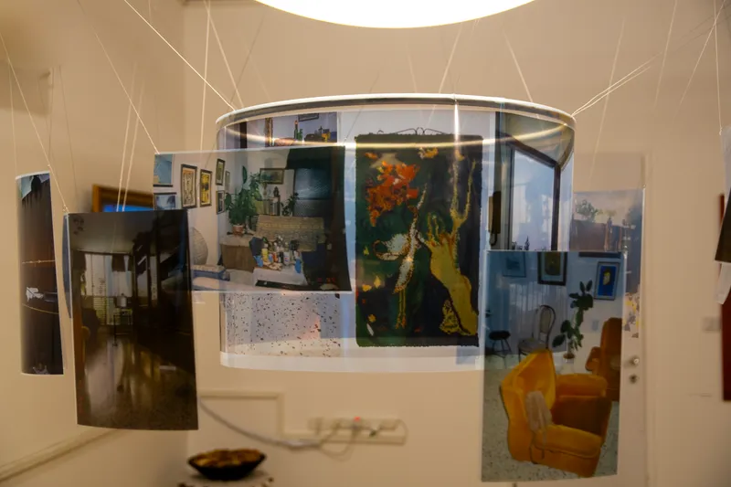
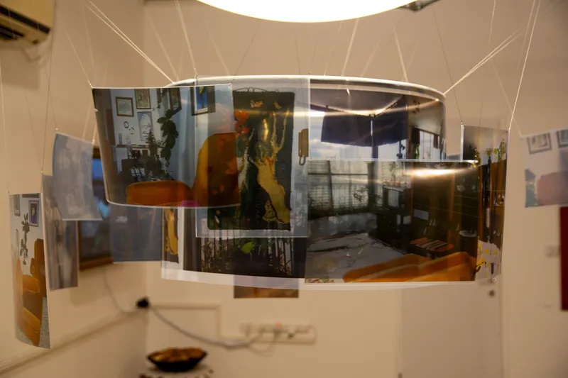
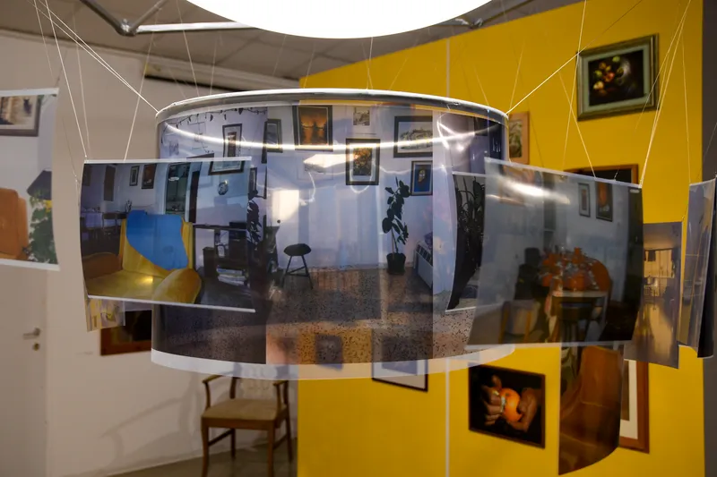
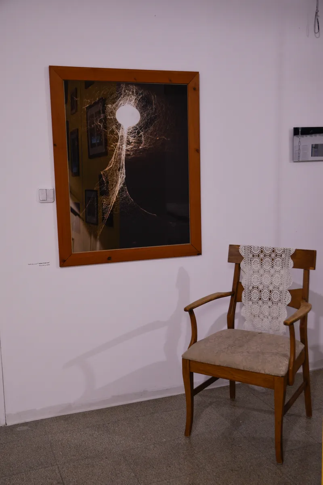
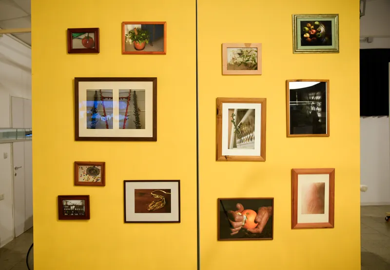
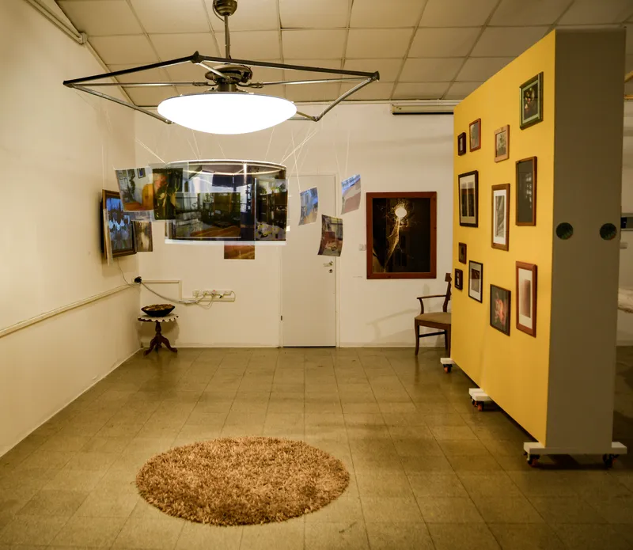
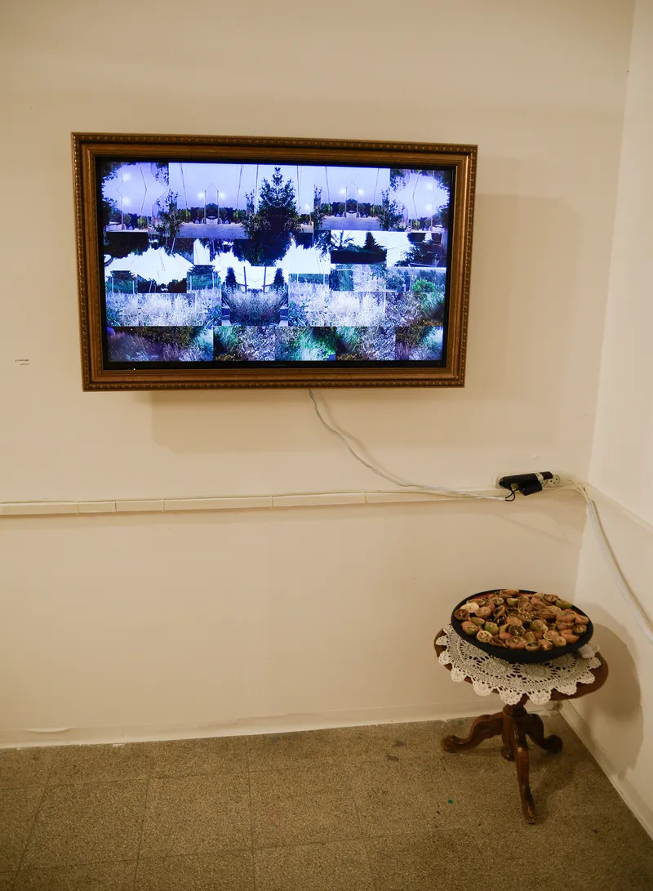
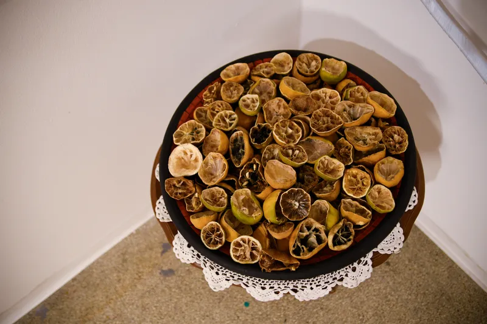
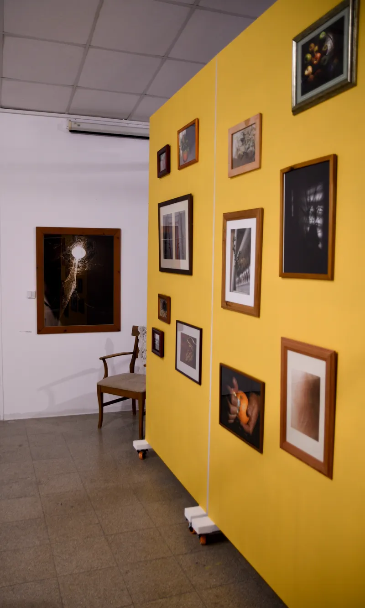
תערוכה קבוצתית של אמניות בראשית דרכן, שבה הוצגה סדרת הצילומים ״טבע דומם״.
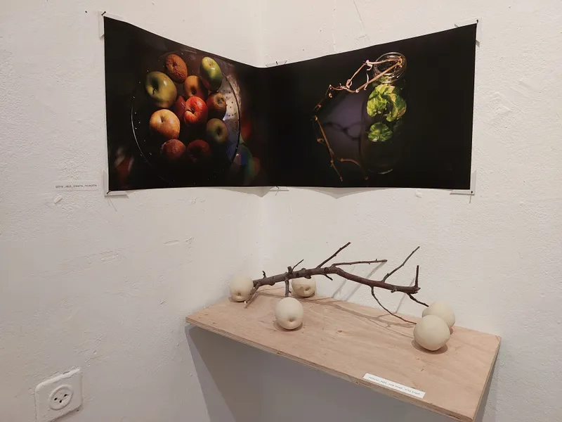
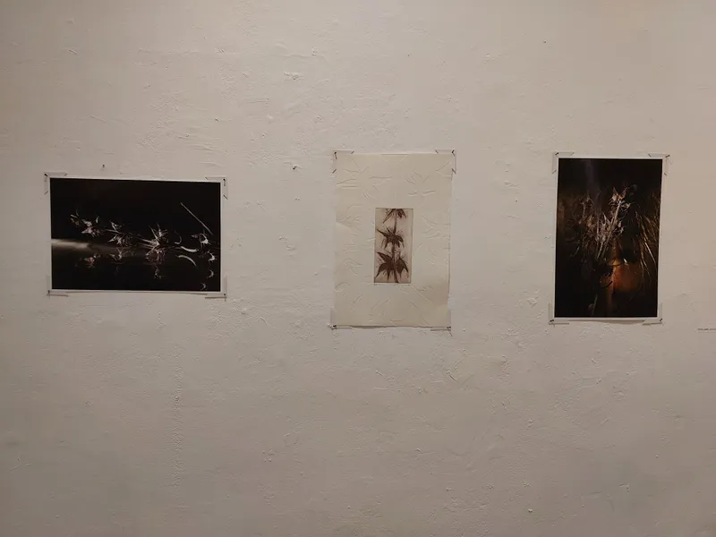
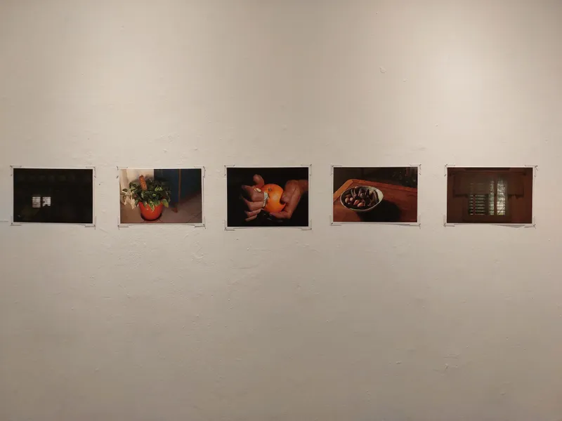
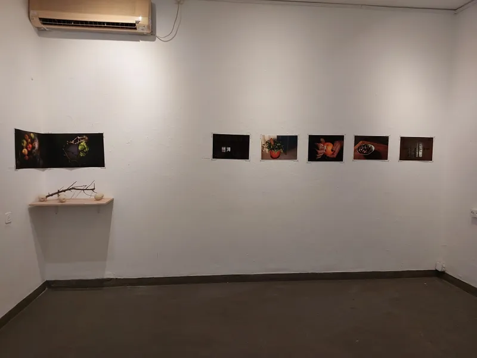
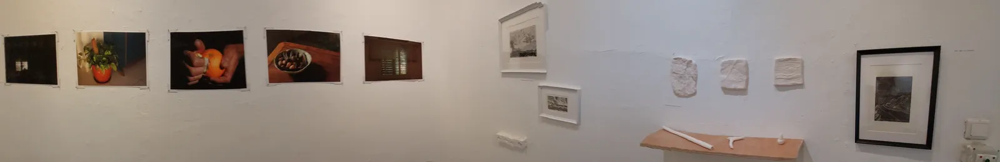
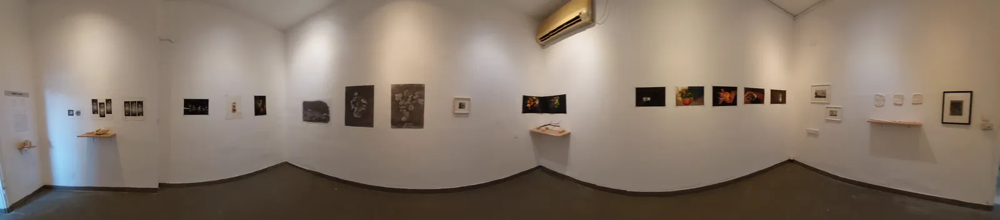